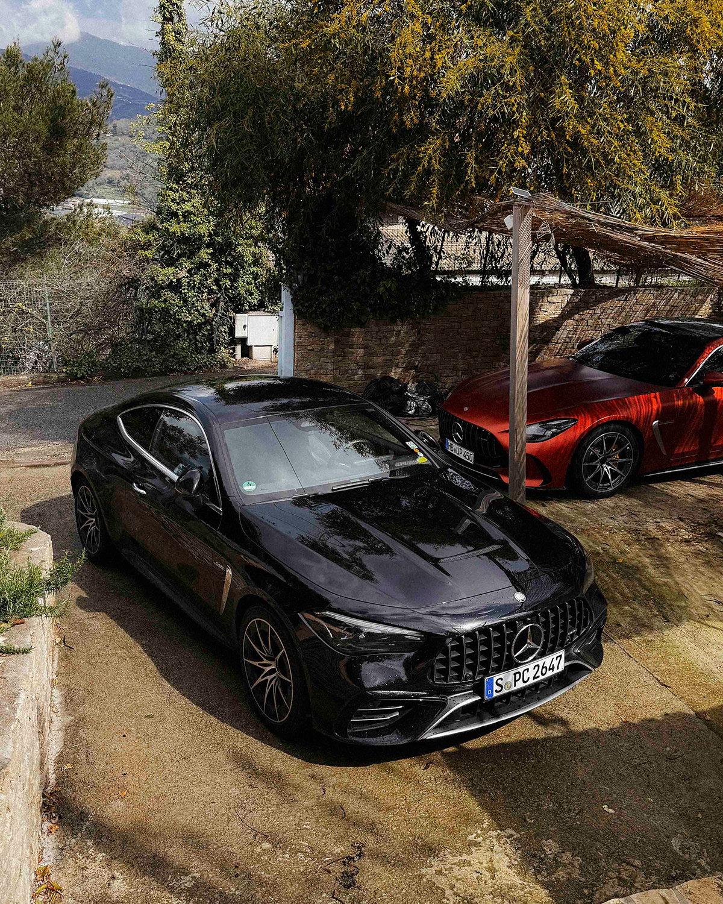
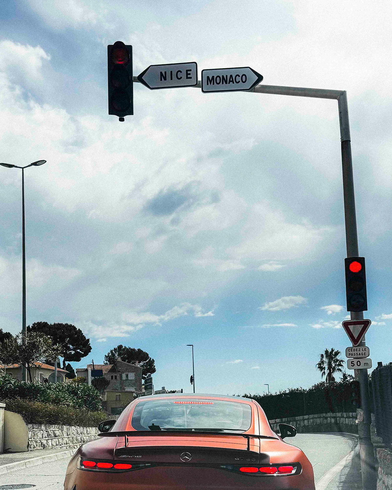
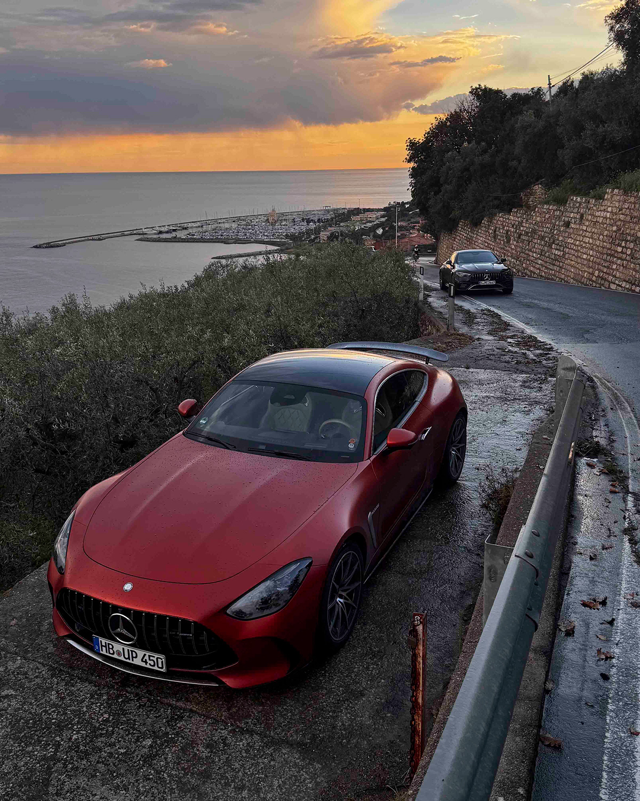

Manche Erlebnisse fühlen sich an wie ein Traum – und genau so war diese Woche. Eine Film- und Fotoproduktion für Mercedes-Benz, zwei außergewöhnliche Fahrzeuge, enge Serpentinenstraßen, die Côte d'Azur im besten Licht und die Freiheit, zwei meiner größten Leidenschaften miteinander zu verbinden: Autofahren und das Festhalten von Momenten mit der Kamera.
Da dies mein erster Blogeintrag ist, würde ich mich gerne kurz vorstellen: Ich bin Blazej Adamowski, 29 Jahre alt, Fotograf und Videograf – und ein Autoliebhaber, seit ich denken kann. Aufgewachsen in Deutschland mit polnischen Wurzeln, habe ich schon früh gelernt, was es heißt, lange Strecken mit dem Auto zurückzulegen. Vier- bis fünfmal im Jahr ging es mit meinen Eltern auf die Reise nach Polen zu meiner Familie – 2000 Kilometer hin und zurück. Diese Fahrten prägten mich, weckten meine Liebe für die Straße.
Mit 9 Jahren hatte ich genug Geld angespart, um mir die Playstation 2 inklusive Formel-1-Spiel zu leisten; in diesem Jahr bekam ich ebenso meine erste Kompaktkamera zur Kommunion. Was als Knipsen begann, entwickelte sich mit 15 zum Filmen und mündete schließlich in einem Filmstudium mit 18. Seitdem lebe ich meine Leidenschaft beruflich – und das Beste daran: Ich kann beides vereinen.

Unterwegs für Mercedes-Benz: Zwei Kreative, ein Ziel
Für diese Produktion waren wir zu zweit unterwegs – ich und mein guter Freund Sven, mit dem ich die Leidenschaft für Fotografie und Autos teile. Unsere Aufgabenverteilung war klar: Ich war für die Bewegtbilder zuständig, Sven konzentrierte sich auf die Fotografie. Unser Auftrag: Social Media Content für Mercedes-Benz. Unsere Motive: ein Mercedes-AMG GT 55 und ein CLE 53 AMG. Unsere Route: Von Deutschland über Südfrankreich bis an die italienische Grenze.
Nizza, Monaco, Saint-Tropez – Namen, die nach Luxus klingen, aber für uns vor allem bedeuteten: Kulissen, Lichtstimmungen und enge Straßen mit Charakter.
Fahrspaß und Ästhetik im Einklang
Der AMG GT 55 war dabei mein persönliches Highlight. Schon der Anblick ist pure Skulptur, aber was mich wirklich fasziniert hat, war das Fahrgefühl. Ich hatte bereits die Möglichkeit, einen Porsche 992.1 911 GT3 Touring und einen Carrera 4S kennenzulernen – als Beifahrer in Ascona und den umliegenden Alpenpässen. Auch für Lamborghini habe ich schon produziert und durfte dabei einen Huracán STO fahren – von Bologna bis nach Mailand und in die Berge.
Doch der AMG GT war anders. Dieses Auto klebt förmlich auf der Straße.
305er-Reifen hinten, die tiefe Sitzposition, das perfekte Zusammenspiel von Kraft und Komfort – eine GT-Erfahrung auf höchstem Niveau. Für mich: eine echte Alternative zum 911, auf Augenhöhe, aber mit ganz eigener Charakteristik. Zudem bietet der AMG GT 55 trotz seiner sportlichen Ausrichtung eine beeindruckende Alltagstauglichkeit, viel Raum für Gepäck und eine sehr gute Rundumsicht, selbst bei den stark abfallenden Fensterlinien.
Der CLE 53 hingegen besitzt klar eine andere Ausrichtung. Er ist weniger ein Supersportler, sondern vielmehr ein sportlich-luxuriöses Coupé, das seine Stärken in Komfort, Langstreckentauglichkeit und einem souveränen Fahrerlebnis ausspielt. Dennoch konnte er – auf seine ganz eigene Art und Weise – mit dem GT mithalten. Wo der GT auf Präzision und Direktheit setzt, punktet der CLE mit Gelassenheit, Power und einem angenehmen Gleiter-Feeling. In engen Bergstraßen fühlte er sich zwar eher wie ein kleines Boot an, doch auch er gab uns stets ein sicheres Gefühl – nur eben mit einem anderen Charakter.

Vom Sonnenaufgang bis zur Blue Hour
Unsere Tage waren vollgepackt: Um 6:00 Uhr klingelte der Wecker – aufstehen, Frühstück in einem kleinen Café an der Küste, Kamera packen, losfahren. Die Morgensonne, dieses warme, goldene Licht sowie die morgendliche Ruhe, ist einfach unvergleichlich. Abends dann der Sonnenuntergang, die Blue Hour. Dazwischen: Espresso-Stops, französische Pâtisserie und abends dann Pasta als Belohnung. Eine Woche wie ein Film – einer, den wir selbst drehen durften.
Was diese Reise für mich so besonders gemacht hat, war nicht nur das Setting oder die Fahrzeuge. Es war dieses Gefühl, dass sich alles zusammenfügt. Leidenschaft, Technik, Emotion. Wir hatten das Konzept im Vorfeld gemeinsam mit der Agentur entwickelt – und vor Ort gemerkt: Es passt. Die Farben, die Formen, die Ästhetik und Seele der Fahrzeuge vor dieser Kulisse. Alles fühlte sich natürlich an. Echte Momente, eingefangen mit der Kamera.
Eine Woche wie ein Film – einer, den wir selbst drehen durften.
Jetzt beginnt der nächste Teil der Reise: das Editing. Ich bin gespannt, was aus all dem Material entsteht. Und noch mehr freue ich mich darauf, bald den fertigen Content zu teilen – denn diese Woche war nicht nur eine Produktion. Sie war wirklich eine Erinnerung fürs Leben.
